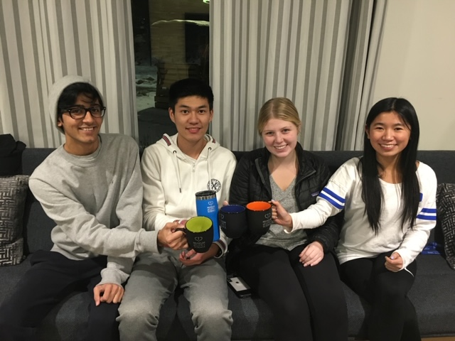

Automatic Skunk Feeder
AUG 2018 - DEC 2018
Group Members
|
Mentors
|
The ProblemThe Museum of Life and Science, located in Durham, NC has many wild animals on exhibit. At one such exhibit, Florian the Skunk has lived most of his life at the museum. Throughout its life, museum staff have always manually scattered food around the enclosure for him. This process requires the museum staff to manually feed Florian every day, and thus Florian began to associate the opening of the exhibit to meal time. As a result, Florian has lacked the ability to "hunt" for his own food and began to associate humans with food. The museum staff was interested in a feeding method that would mimic the natural unpredictability of food in the wild. |
 |
The Solution
We created a set of four independently-operated capsules that release food from a hinged bottom flap. This bottom flap is held together by an electromagnet which is deactivated at the time of food dispersal. The devices can be attached magnetically to the ceiling of the enclosure in various spots in order to change the location of food dispersal. An Arduino controls the timing of the food drop, providing a more natural feeding experience for Florian.


Device Structure